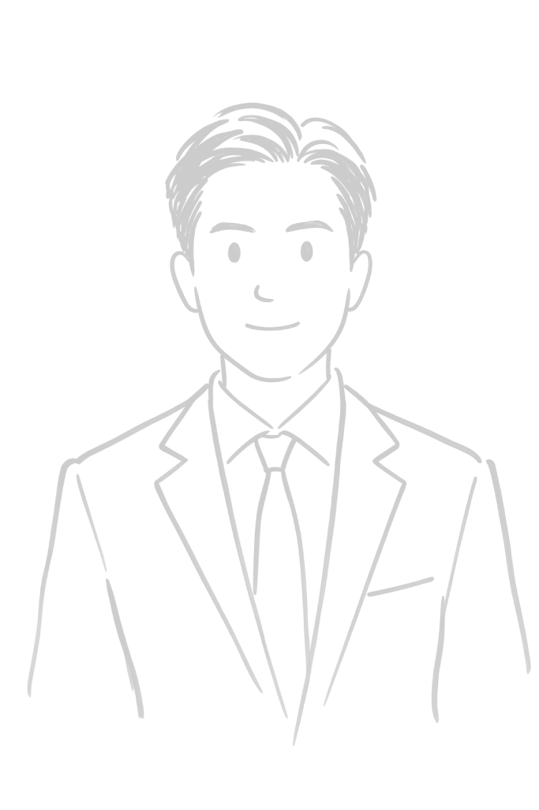

N
Nicholai Oblina
Developer & builder — I make studying and small businesses look good on the internet.
👋
Hi, I'm Nicho. I build web apps end-to-end — design, frontend, backend, deploy — and I like shipping fast without shipping ugly.
My main project is kwek.cards, an AI-powered study platform. On the side, I build clean, fast websites for small businesses.
🚀Projects
kwek.cards ↗ live
AI-powered flashcards, quizzes, and community deck sharing. Paste your notes or upload a file — kwek turns them into study material in seconds. Full-stack solo build: auth, offline-first storage with cloud sync, AI generation with guardrails, and a community hub for sharing decks.
Small-business website kit
A set of four production-ready website templates (café, trades, salon, gym) plus deployment, pricing, and sales playbooks. Single-file HTML, loads instantly, free to host — built for Philippine small businesses that live on Facebook but deserve a real website.
More in the lab
- 📱 kwek mobile — React Native / Expo companion app for kwek.cards (in progress)
- 🧪 Assorted experiments — this portfolio is one of them: a single HTML file styled like Notion, with a working dark mode
🧰Skills
Frontend
Backend
AI
Tools
💼Websites for small businesses
I design, build, and launch websites for cafés, gyms, salons, and service businesses — live within a week, almost zero monthly cost.
- Starter — a sharp one-page site with your branding, live on your own domain
- Standard — adds contact/Messenger integration, Google Maps, and your Google Business Profile
- Premium — multi-page site with booking integration and local SEO
Want to see what your business could look like? Message me — I'll make you a free demo before you pay anything.
🎯Now
- Launch kwek community deck sharing
- Building the kwek mobile app (Expo)
- Taking on freelance website clients
📬Contact
⚡
Fastest way to reach me: nichobusiness17@gmail.com
Freelance inquiries, kwek feedback, or just to say hi — I reply within a day.